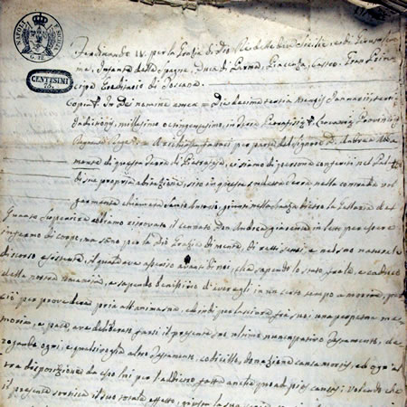
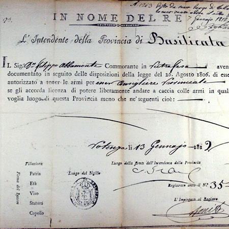
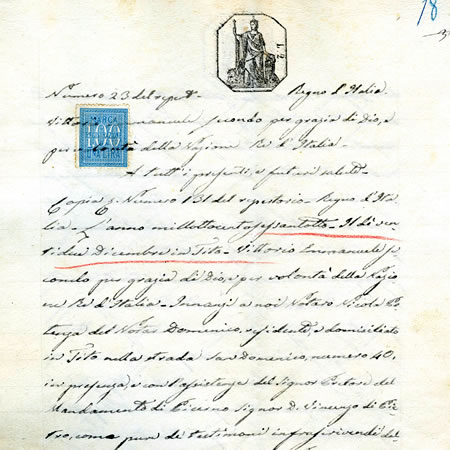

Testamento di Andrea Abbamonte fu Nicola
Datato Pietrafesa, 13 gennaio 1800
» Copia conforme all’originale su carta bollata del 6 settembre 1815

Licenza di porto d'armi rilasciata a Filippo Abbamonte fu Andrea
Datata Potenza, 13 gennaio 1812, da cui si evince la carica di consigliere provinciale

Testamento di Francesco Laurini fu Gennaro
Datato Tito, 12 maggio 1866 con estratto di morte del medesimo, datato Tito, 9 agosto 1868
» Copia conforme all’originale